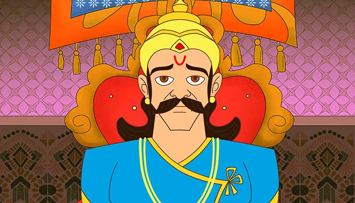

The Meanest Man
Even the meanest person has some conscious
Vikram pulled Vaitaal from the tree with full force, put him on his shoulder
and started walking fast. Vaitaal again started telling a story to Vikram, he
said - "Vikram, Now I tell you a true story of Swarn Desh.
There lived a rich man who helped poor people, that is why all people praised
him. Even the king also praised him. He had only one son. Because of being
the only child, he was brought up with great care and love. As the time
passed, he grew up as a fine young handsome boy.
Now, there lived a newly married woman in his neighborhood. Her husband was
not very good, so she got attracted to him. Since both houses were adjacent
to each other, they could go to each other's house easily. Once that woman's
husband went to foreign lands, so she was alone. She thought to go to that
boy's room.
In the night she came to the house of the rich man and then entered that
boy's room. She knew the room of that boy. He was awake at that time. He
got stunned to see a woman's figure at his room's door. He asked her - "Who
are you?" That woman didn't reply anything, just came near his bed and said
- "I am your beloved." and she lay down beside him. The boy got scared. The
woman requested to love her, but that boy took her as a witch and got
unconscious. The woman also got scared seeing him unconscious.
By chance some thieves entered the rich man's house. That woman's husband
was also among those thieves. He used to say at home, that he was going to
foreign lands, but he used to steal during those days. He told the stolen
things as his business profit and impressed his neighbors.
That woman hid seeing the thieves. And she was extremely surprised when she
saw her husband among those thieves. She saw everything, her husband and
other thieves stole the things from that rich man's house and went away. The
woman came back to her house quietly.
A lot of noise rose from the rich man's house when the boy told everything to
his parents. He told about the woman also. Everybody was stunned at this.
The boy saw his neighbor's wife and he recognized her and told his father
everything.
The rich man told this incident to the king. The king's soldiers came and took
the woman to the king. The woman bluntly refused that she had committed
any crime. She said - "It is only because of jealousy, that the boy is blaming
me."
She was saying this to the king that the king's soldiers brought her husband
also for stealing in rich man's house, along with the stolen things. Her
husband was caught in a ruins. when she saw her husband, she got scared.
After hearing everybody, the king ordered for the husband to be hanged, and
for the woman to be expelled.
After telling all this, Vaitaal said - "This was the king's judgment, what is
your judgment, Vikram?" Vikram didn't speak anything, Vaitaal asked him
again.
Vikram said - "I think the king's judgment was wrong." "Why?" "It was all
right to hang the man, but it was wrong to expel the woman." "Why?" "The
woman hid everything in spite of knowing everything, and thus tried to save
herself only; it was her Dharm." Vitaal laughed - "Does such a woman have
any kind of Dharm, this is only womanish character." Vikram said seriously -
"Even the meanest man has some kind of Dharm. Although she lost her mind
because of her bad husband, still she loved her husband, that is why she did
not want her husband to be punished. That is why it was not right to punish
her. It is not right to consider a man mean all the time."
Vaitaal said - "You are right, Vikram." He again laughed loudly, that Vikram
held him tightly. Vaitaal said - "Don't worry, I will not run away now." But
Vikram didn't trust him so he held him tightly.
